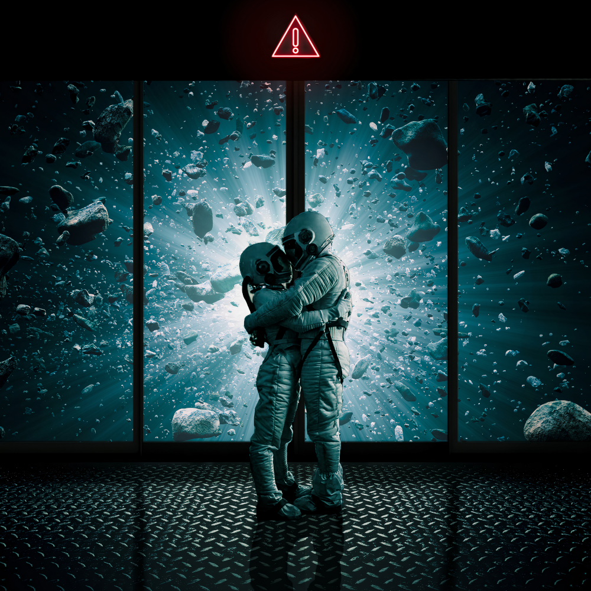

INTACT Arts
 My name is INTACT and I'm from India I love photo manipulation, I am a nft artist currently perusing mechanical engineering.I usually like to make surreal, fantasy, silhouette and Sci-fi types of manipulations. When I came to know about photo manipulation, I used to edit my photos and post them on social media but then I thought I should mix my imagination with it and that's how I started my photo manipulation journey. At that time i was in high school I didn't get much time for editing. So I gave up photo manipulation for a while and after that, in 2020, Pendamic came every one was locked in home no school no college that's the best time for me to follow my passion and I start creating again. When I came to know about NFT, I thought that this is the best way to show my imagination to the world. I started my nft journey in January 2022.
As an engineering student, I have to study and I get very stressed out, but doing this make me feel much better and I love when people see me as an artist . . . I am doing photo manipulation since 2016. I started my nft journey in January 2022 and currently I have made three collections on opensea.